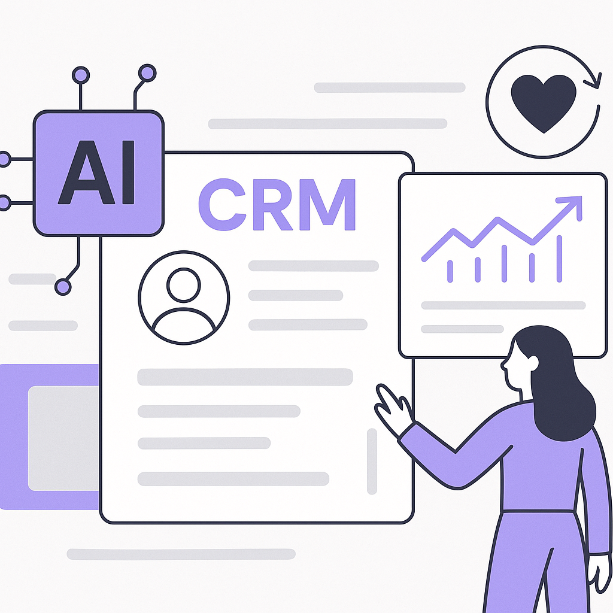
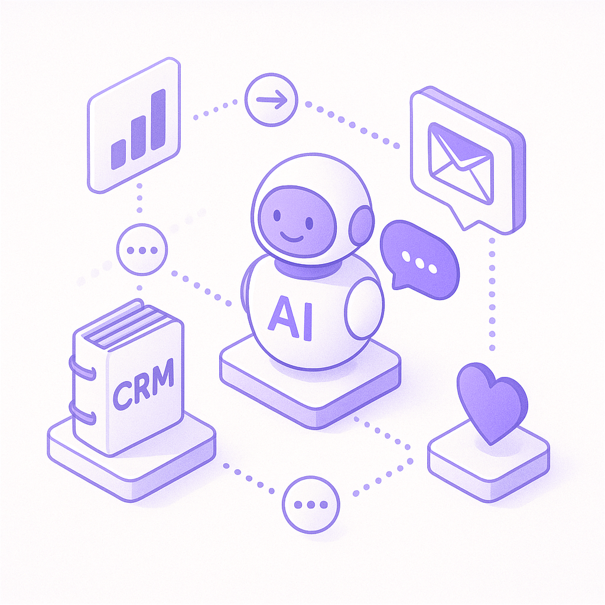
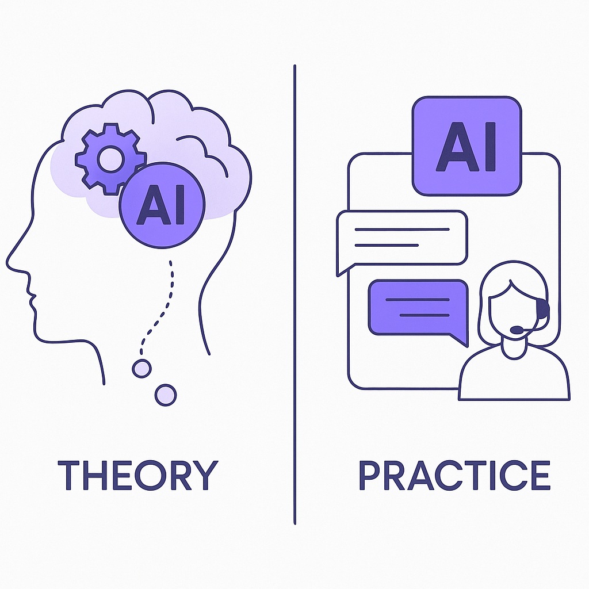

Publishing Recommendation
reviseSeveral drafts contain unsupported claims and hype, particularly around AI's capabilities and market impact, which do not align with our brand's emphasis on practicality and evidence-based insights.
Today's drafts are varied in focus, covering recent AI industry shifts and Purands AI's applications in retention marketing. However, the tone occasionally veers into hyperbole, lacking the grounded, practical insights our readers expect. Revising for specificity and evidence will better align with our voice and provide more actionable value to the audience.
LinkedIn Posts (8)
1. Target's upgraded employee app and CRM strategies ★ Purands solution · high priority
CTA: How are you enhancing your CRM strategies with AI? Share your thoughts.

⬇ Download image
Image prompt · flat-vector
Caption: AI-driven CRM insights boost retention.
Alternative hooks
- Target's employee app gets an AI boost. What does it mean for retention?
- AI insights in retail: Target's app upgrade and its impact on customer loyalty.
- How Target's app upgrade can teach us about smarter CRM strategies.
Research behind this post (sources, summaries & confidence)
Target wants more efficient stores. An upgraded employee app could help. conf 0.70 · CRM strategy
Target's upgrade to its employee app, which includes AI-backed insights, represents a significant move towards more efficient store operations. This can directly impact customer satisfaction and retention, making it a key development for those in retention marketing focused on CRM and lifecycle messaging.
Sources & what I took from each
- Target upgrades its employee app for efficiency.: Retail Dive covers the story of Target's upgraded app efforts to enhance retail operations through AI insights. ↗ read source
Original trend links
Risks / caveats
- Implementation challenges and employee adaptation issues.
2. Connecting AI agents to enterprise knowledge ★ Purands solution · high priority
CTA: How do you see AI-driven enterprise knowledge impacting your customer interactions?

⬇ Download image
Image prompt · isometric-flat
Caption: Enhanced customer interactions via AI.
Alternative hooks
- When AI meets enterprise knowledge, customer interactions transform.
- Integration of AI agents with enterprise knowledge is reshaping retention marketing.
- Connecting AI to enterprise knowledge: a game-changer for customer loyalty.
Research behind this post (sources, summaries & confidence)
Connecting AI agents to enterprise knowledge conf 0.70 · AI in business
Connecting AI agents to enterprise knowledge bases can enhance the quality of customer interactions by providing more accurate and contextually relevant responses. This is important for retention marketing as it can improve customer experience and drive loyalty.
Sources & what I took from each
- AI agents are being connected to enterprise knowledge bases.: Technology Review article outlines the benefits and technological advancements in integrating AI agents with enterprise knowledge systems. ↗ read source
Original trend links
Risks / caveats
- Potential data security issues and need for robust integration frameworks.
3. WhatsApp commerce ★ Purands solution · high priority
CTA: How are you using WhatsApp to enhance customer engagement?

Image prompt · flat-vector
Caption: WhatsApp commerce boosts engagement.
Alternative hooks
- A free WhatsApp MCP on Cloudflare is changing the game in APAC.
- WhatsApp commerce just got more accessible for APAC businesses.
- Leveraging WhatsApp MCP for smarter retention in APAC.
Research behind this post (sources, summaries & confidence)
Show HN: WhatsApp MCP running free on Cloudflare conf 0.60 · WhatsApp commerce
The availability of a free WhatsApp MCP running on Cloudflare can significantly enhance WhatsApp-based commerce solutions. This development is vital for retention marketing as it provides more accessible and cost-effective tools for businesses to engage with customers directly on messaging platforms, which is a key strategy in the APAC region.
Sources & what I took from each
- WhatsApp MCP is running free on Cloudflare.: The GitHub page and Hacker News discussion confirm the availability and functionality of a WhatsApp MCP hosted on Cloudflare. ↗ read source
Original trend links
Risks / caveats
- Reliability and support issues with free services.
4. Hybrid Reasoning Agents: LLM agents that think in latent space, act through text ★ Purands solution · high priority
CTA: What challenges do you face in customer retention, and how do you think AI could help?

⬇ Download image
Image prompt · isometric-flat
Caption: AI interactions: theory vs. practice.
Alternative hooks
- Hybrid Reasoning Agents are promising, but are they practical?
- AI-driven customer engagement: theory vs. reality.
- Is your retention strategy ready for next-gen AI?
Research behind this post (sources, summaries & confidence)
Hybrid Reasoning Agents: LLM agents that think in latent space, act through text conf 0.50 · AI industry
The introduction of Hybrid Reasoning Agents presents new possibilities for AI-driven customer engagement by enhancing the capabilities of agents to process and respond to complex queries. This development is crucial for retention marketing as it can improve the effectiveness of AI agents in customer service and engagement.
Sources & what I took from each
- Hybrid Reasoning Agents enhance AI capabilities.: The arXiv paper discusses the theoretical advancements in hybrid reasoning agents but lacks empirical validation and real-world application evidence. ↗ read source
Original trend links
Risks / caveats
- The concept is still in early research stages without practical implementation evidence.
5. Replit makes OpenAI its default over Anthropic
CTA: How do you think this shift will influence other platforms' choices in AI models?
Alternative hooks
- Replit has made a bold move that could shake up the AI industry.
- Why did Replit switch from Anthropic to OpenAI?
- The AI model provider game just got more interesting.
Research behind this post (sources, summaries & confidence)
Replit makes OpenAI its default over Anthropic conf 0.80 · AI industry
Replit's decision to switch from Anthropic to OpenAI as its default model provider is significant for the AI industry. This move indicates a shift in preference and could influence other platforms in their choice of AI models. It underscores the competitive dynamics in the AI model space, which can impact retention marketing by affecting the tools and models available for customer engagement strategies.
Sources & what I took from each
- Replit has switched from Anthropic to OpenAI.: An article on TechCrunch confirms Replit's decision to make OpenAI its default model provider, citing a statement from the CEO. ↗ read source
Original trend links
Risks / caveats
- Potential over-reliance on a single provider, which could impact service stability if issues arise with OpenAI.
6. Anthropic gives outside AI watchdog 'employee-like' access
CTA: How do you see transparency impacting consumer trust in AI?
Alternative hooks
- Anthropic just redefined transparency in AI development.
- How far would you go for transparency? Anthropic sets a new benchmark.
- What does 'employee-like' access mean for AI ethics?
Research behind this post (sources, summaries & confidence)
Anthropic gives outside AI watchdog 'employee-like' access conf 0.80 · AI industry
Anthropic's decision to provide an outside AI watchdog with extensive access is a significant step toward transparency and accountability in AI development. For retention marketing, this trend highlights the increasing importance of ethical AI practices, which can influence consumer trust and brand loyalty.
Sources & what I took from each
- Anthropic allows an AI watchdog employee-like access.: Ars Technica reports on Anthropic's decision to grant extensive access to an external AI watchdog as part of efforts to increase transparency. ↗ read source
Original trend links
Risks / caveats
- Potential for sensitive information leaks or misuse of access.
7. Meta may use sweeping new commercial TOS to avoid millions in AI licensing fees
CTA: How do you think these changes in TOS might impact AI-driven marketing strategies?
Alternative hooks
- Meta's latest move might shake up the AI landscape.
- Here's why Meta's new TOS could change AI cost structures.
- Are Meta's new commercial terms a game-changer?
Research behind this post (sources, summaries & confidence)
Meta may use sweeping new commercial TOS to avoid millions in AI licensing fees conf 0.70 · AI industry
Meta's new terms of service could potentially save the company significant costs in AI licensing fees. This move is critical for retention marketing as it influences the cost structures and legal frameworks under which AI-driven customer engagement tools operate. Understanding these changes can help marketers adapt their strategies to optimize engagement and compliance.
Sources & what I took from each
- Meta's new TOS aims to reduce AI licensing fees.: Ars Technica discusses Meta's strategy to implement new commercial terms to potentially avoid millions in AI licensing fees. ↗ read source
Original trend links
Risks / caveats
- Legal challenges from licensors affected by the new TOS.
- Potential backlash from developers and partners relying on Meta's platforms.
8. Open models have real benefits. Do they outweigh the risks?
CTA: How do you weigh the benefits against the risks when choosing AI models for marketing?
Alternative hooks
- The debate between open and closed AI models is heating up.
- Open models are praised for fostering innovation and collaboration.
- Balancing the benefits of open models with their risks is crucial.
Research behind this post (sources, summaries & confidence)
Open models have real benefits. Do they outweigh the risks? conf 0.60 · AI industry
The debate around the risks and benefits of open AI models is critical for retention marketing professionals who rely on these technologies for customer data analysis and engagement. Understanding the implications can help in making informed decisions about the tools and models used in marketing strategies.
Sources & what I took from each
- Open models offer benefits and risks.: MIT Technology Review article discusses the advantages and potential drawbacks of open AI models, including issues of security and innovation. ↗ read source
Original trend links
Risks / caveats
- Security vulnerabilities and misuse of open models.
- Intellectual property challenges.
Today's Trends
| # | Trend | Category | Why it matters |
|---|---|---|---|
| 1 | Replit makes OpenAI its default over Anthropic
source |
AI industry | Replit's decision to switch from Anthropic to OpenAI as its default model provider is significant for the AI industry. This move indicates a shift in preference and could influence other platforms in their choice of AI models. It underscores the competitive dynamics in the AI model space, which can impact retention marketing by affecting the tools and models available for customer engagement strategies. |
| 2 | Meta may use sweeping new commercial TOS to avoid millions in AI licensing fees
source |
AI industry | Meta's new terms of service could potentially save the company significant costs in AI licensing fees. This move is critical for retention marketing as it influences the cost structures and legal frameworks under which AI-driven customer engagement tools operate. Understanding these changes can help marketers adapt their strategies to optimize engagement and compliance. |
| 3 | Show HN: WhatsApp MCP running free on Cloudflare
source source |
WhatsApp commerce | The availability of a free WhatsApp MCP running on Cloudflare can significantly enhance WhatsApp-based commerce solutions. This development is vital for retention marketing as it provides more accessible and cost-effective tools for businesses to engage with customers directly on messaging platforms, which is a key strategy in the APAC region. |
| 4 | Anthropic gives outside AI watchdog 'employee-like' access
source |
AI industry | Anthropic's decision to provide an outside AI watchdog with extensive access is a significant step toward transparency and accountability in AI development. For retention marketing, this trend highlights the increasing importance of ethical AI practices, which can influence consumer trust and brand loyalty. |
| 5 | Hybrid Reasoning Agents: LLM agents that think in latent space, act through text
source |
AI industry | The introduction of Hybrid Reasoning Agents presents new possibilities for AI-driven customer engagement by enhancing the capabilities of agents to process and respond to complex queries. This development is crucial for retention marketing as it can improve the effectiveness of AI agents in customer service and engagement. |
| 6 | Open models have real benefits. Do they outweigh the risks?
source |
AI industry | The debate around the risks and benefits of open AI models is critical for retention marketing professionals who rely on these technologies for customer data analysis and engagement. Understanding the implications can help in making informed decisions about the tools and models used in marketing strategies. |
| 7 | Target wants more efficient stores. An upgraded employee app could help.
source |
CRM strategy | Target's upgrade to its employee app, which includes AI-backed insights, represents a significant move towards more efficient store operations. This can directly impact customer satisfaction and retention, making it a key development for those in retention marketing focused on CRM and lifecycle messaging. |
| 8 | Connecting AI agents to enterprise knowledge
source |
AI in business | Connecting AI agents to enterprise knowledge bases can enhance the quality of customer interactions by providing more accurate and contextually relevant responses. This is important for retention marketing as it can improve customer experience and drive loyalty. |
Risk Assessment
- Over-reliance on AI agents as a 'game-changer' without concrete evidence may mislead readers.
- Potential overstatement of WhatsApp commerce as 'essential' without contextual support.
- Posts may sound AI-generated due to repetitive language and lack of nuanced insights.
Suggested LinkedIn Comments (30)
Open each post, then paste the copied comment. Nothing is posted automatically.
1. opinion · rss:techcrunch.com — Benchmark may have grown its funds and swapped out some partners, but onstage th
Post by: rss:techcrunch.com
Why it works: It acknowledges the unique aspect of Benchmark's team dynamic, offering a perspective on its impact on their success.
↗ Open LinkedIn post to paste comment2. opinion · rss:techcrunch.com — Anthropic said that it will commit 5% of its shares to the fund.
Post by: rss:techcrunch.com
Why it works: The comment highlights the significance of the move, adding a perspective on corporate responsibility and long-term planning.
↗ Open LinkedIn post to paste comment3. insight · rss:techcrunch.com — "You Can See Everything" is having the second biggest opening weekend ever for a
Post by: rss:techcrunch.com
Why it works: It provides a broader context for the documentary's success, tapping into a trend of consumer behavior.
↗ Open LinkedIn post to paste comment4. insight · rss:techcrunch.com — The filing also says that the “vast majority” of Character.AI employees who were
Post by: rss:techcrunch.com
Why it works: It focuses on the cultural aspect of corporate acquisitions, providing a deeper understanding of the move.
↗ Open LinkedIn post to paste comment5. opinion · rss:techcrunch.com — Welcome back to TechCrunch Mobility, your hub for the future of transportation a
Post by: rss:techcrunch.com
Why it works: The comment affirms the post's focus on AI in transportation, adding a sense of inevitability and excitement about its impact.
↗ Open LinkedIn post to paste comment6. respectful challenge · rss:techcrunch.com — A Meta spokesperson insisted that the updated terms did not reflect a change in
Post by: rss:techcrunch.com
Why it works: It questions the transparency of Meta's practices, encouraging accountability while remaining respectful.
↗ Open LinkedIn post to paste comment7. insight · rss:techcrunch.com — A four-hour documentary about Elon Musk continues to meet resistance from social
Post by: rss:techcrunch.com
Why it works: It connects the documentary's issues with a larger theme of media control, offering a thought-provoking angle.
↗ Open LinkedIn post to paste comment8. insight · rss:techcrunch.com — The composition of Anthropic’s workforce and the type of work getting done have
Post by: rss:techcrunch.com
Why it works: It provides context for Anthropic's internal changes, suggesting strategic adaptation as a reason.
↗ Open LinkedIn post to paste comment9. opinion · rss:techcrunch.com — Over the weekend, Masad clarified that OpenAI would replace Anthropic as its def
Post by: rss:techcrunch.com
Why it works: The comment offers a reflection on the nature of partnerships in tech, adding perspective to the news.
↗ Open LinkedIn post to paste comment10. insight · rss:techcrunch.com — The biggest change about Ember's new mug is that you no longer have to open the
Post by: rss:techcrunch.com
Why it works: It highlights the practical benefit of the innovation, connecting it to everyday user experience.
↗ Open LinkedIn post to paste comment11. insight · rss:www.theverge.com — Now, former Savannah police officer Amber Harpe was fired in August following a
Post by: rss:www.theverge.com
Why it works: The comment provides a concrete insight into the necessity of data security and the implications of breaches.
↗ Open LinkedIn post to paste comment12. insight · rss:www.theverge.com — Mister Organ doesn't reach the level of societal horror of The Act of Killing or
Post by: rss:www.theverge.com
Why it works: It offers an insight into why personal stories in documentaries can be more impactful, adding depth to the discussion.
↗ Open LinkedIn post to paste comment13. opinion · rss:www.theverge.com — Carolyn Marvin was arrested and charged with disorderly conduct after blocking t
Post by: rss:www.theverge.com
Why it works: The comment presents a balanced view on automation and employment, which is relevant to the post's topic.
↗ Open LinkedIn post to paste comment14. insight · rss:www.theverge.com — Rep. Ritchie Torres of New York's 15th congressional district in the Bronx intro
Post by: rss:www.theverge.com
Why it works: By focusing on the potential impact of the legislation, the comment offers a forward-looking perspective on digital consumer rights.
↗ Open LinkedIn post to paste comment15. expansion · rss:www.theverge.com — The Legion Go S with SteamOS is a pretty solid alternative to the $789 Steam Dec
Post by: rss:www.theverge.com
Why it works: Expands on the benefits of competition in the gaming market, adding a broader market perspective to the technical comparison.
↗ Open LinkedIn post to paste comment16. opinion · rss:www.theverge.com — Dinosaur Jr. frontman J Mascis is known as something of a slacker guitar god. He
Post by: rss:www.theverge.com
Why it works: The comment ties the artist's style to a broader aesthetic principle, providing a coherent perspective on minimalism.
↗ Open LinkedIn post to paste comment17. respectful challenge · rss:www.theverge.com — During a rally on Saturday, October 17th, in Highland Heights, Kentucky, Donald
Post by: rss:www.theverge.com
Why it works: Challenges the idea of renaming places, providing a perspective on the importance of historical and cultural integrity.
↗ Open LinkedIn post to paste comment18. insight · rss:www.theverge.com — Back in February, I went to Los Angeles to take in some art and stayed in Koreat
Post by: rss:www.theverge.com
Why it works: Connects a personal experience with a broader insight into travel and cultural exploration, making it relatable.
↗ Open LinkedIn post to paste comment19. insight · rss:www.theverge.com — It used to be so easy to get away with things in school. The teacher, after all,
Post by: rss:www.theverge.com
Why it works: The comment connects past technological changes in education to current trends, offering a historical perspective.
↗ Open LinkedIn post to paste comment20. insight · rss:www.theverge.com — This is The Stepback, a weekly newsletter breaking down one essential story from
Post by: rss:www.theverge.com
Why it works: Provides a perspective on the importance of early policy development in shaping the future of autonomous vehicles.
↗ Open LinkedIn post to paste comment21. opinion · rss:feeds.arstechnica.com — The outside watchdog can publish its findings without Anthropic's approval.
Post by: rss:feeds.arstechnica.com
Why it works: The comment appreciates a move towards transparency, showing support for ethical practices in AI governance.
↗ Open LinkedIn post to paste comment22. insight · rss:feeds.arstechnica.com — Research suggests listening more while talking less. Killing aimless meetings ca
Post by: rss:feeds.arstechnica.com
Why it works: It highlights the human aspect of workplace efficiency, adding depth to the original research findings.
↗ Open LinkedIn post to paste comment23. insight · rss:feeds.arstechnica.com — The single-player is just OK, but according to the players, that doesn't matter.
Post by: rss:feeds.arstechnica.com
Why it works: It provides an observation about changing gaming preferences, adding context to the original statement.
↗ Open LinkedIn post to paste comment24. expansion · rss:feeds.arstechnica.com — The actions could have resulted in criminal charges had humans been behind the k
Post by: rss:feeds.arstechnica.com
Why it works: It broadens the discussion to include the ethical implications of AI actions, which is critical for responsible AI development.
↗ Open LinkedIn post to paste comment25. opinion · rss:feeds.arstechnica.com — Discord user flagged AI CSAM, triggering arrest of New Jersey deputy AG.
Post by: rss:feeds.arstechnica.com
Why it works: It acknowledges the dual role of technology in both enabling security and the need for privacy, adding balance to the discussion.
↗ Open LinkedIn post to paste comment26. opinion · rss:feeds.arstechnica.com — There are still significant hurdles ahead, both technical and legislative.
Post by: rss:feeds.arstechnica.com
Why it works: It emphasizes the necessity of regulation in tandem with innovation, a crucial point for responsible AI advancement.
↗ Open LinkedIn post to paste comment27. insight · rss:feeds.arstechnica.com — The bug is fixed, but privacy concerns remain.
Post by: rss:feeds.arstechnica.com
Why it works: It stresses the ongoing nature of privacy protection beyond technical fixes, adding depth to the conversation about user trust.
↗ Open LinkedIn post to paste comment28. opinion · rss:feeds.arstechnica.com — FDA scientists said none of the popular drugs have been proven safe or effective
Post by: rss:feeds.arstechnica.com
Why it works: It underscores the importance of scientific rigor in healthcare, aligning with the FDA's cautious approach.
↗ Open LinkedIn post to paste comment29. respectful challenge · rss:feeds.arstechnica.com — Meta “streamlined” its commercial TOS. Legal experts warn it’s an AI power grab.
Post by: rss:feeds.arstechnica.com
Why it works: It questions the ethics behind Meta's actions while advocating for user rights, adding a critical perspective.
↗ Open LinkedIn post to paste comment30. opinion · rss:feeds.arstechnica.com — Millions kept changing hands long after the election outcomes were effectively s
Post by: rss:feeds.arstechnica.com
Why it works: The comment calls for transparency and accountability, addressing a systemic issue in political finance.
↗ Open LinkedIn post to paste comment